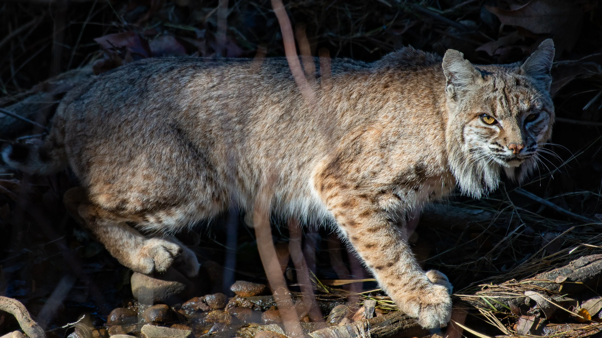

This is a Bobcat

Bobcats have a black-tipped stubby little tail, or bobbed tail from which they get their name. It reaches around 50 inches in length, and is shorter than many big cats tails. The tails coloring is different to that of the lynx which is in the same genus: the tip of the lynxs tail is completely black, while the underside of a bobcats tail is white.